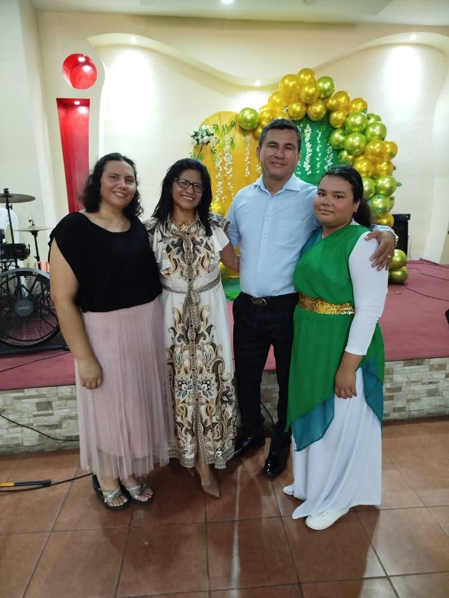
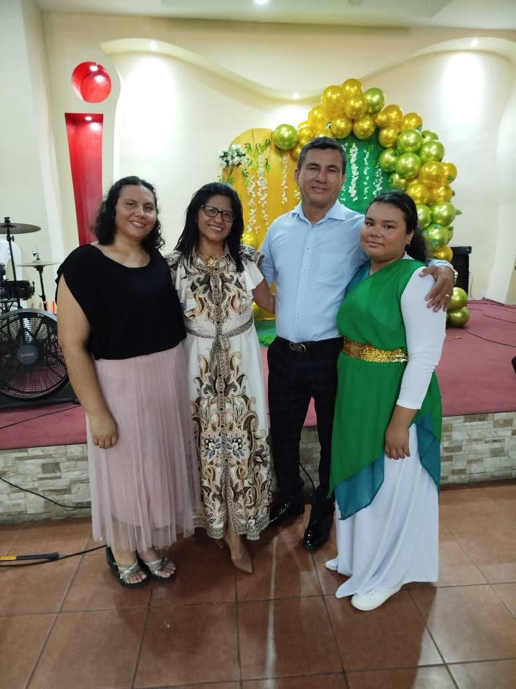

Mateo 28:19
Marcos 16:15
Una comunidad de fe donde todos son bienvenidos. Únase a nosotros en nuestro viaje espiritual y encuentre esperanza, amor y propósito.
Únase a Nuestros ServiciosMateo 28:19
Marcos 16:15
SER UNA IGLESIA QUE IMPACTE A LAS FAMILIAS CON EL MENSAJE RESTAURADOR DEL EVANGELIO.


 



Domingos: 10:00 AM, 12:00 PM
Únase a nosotros para nuestra celebración principal de la semana.
Miércoles: 7:00 PM
Un tiempo para profundizar en las Escrituras y crecer en la fe.
Lunes a Viernes: 7:00 AM
Comience su día con oración y reflexión.
Nuestro ministerio juvenil ofrece un espacio para que los jóvenes crezcan en su fe mientras se conectan con otros.
Una comunidad de apoyo donde las mujeres pueden compartir, aprender y crecer juntas en Cristo.
Únase a nuestro equipo de alabanza y use sus talentos musicales para glorificar a Dios.
Una noche especial de adoración y alabanza con música inspiradora.
Un día de diversión, comida y actividades para toda la familia.
Aprenda prácticas espirituales para profundizar su relación con Dios.
De la Barranca 10 metros hacia abajo
+505 8883 8345
info@iglesiacasaderestauracion.com
Lunes a Viernes: 9:00 AM - 5:00 PM
Sábados: 9:00 AM - 12:00 PM